Classical naturopathy harnesses the primal forces of nature to awaken the body's innate self-regulating faculties (Vis Medicatrix Naturae) without invasive pharmaceuticals.
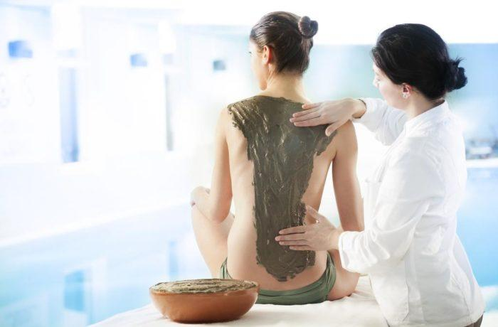
Prithvi • EarthPurified mineral clay packs applied to the spine, abdomen, and joints to gently absorb localized visceral heat and reduce tissue congestion.
 Jala • Water
Jala • Water
Precision temperature immersion baths and therapeutic underwater jet streams that stimulate cutaneous microcirculation and venous return.
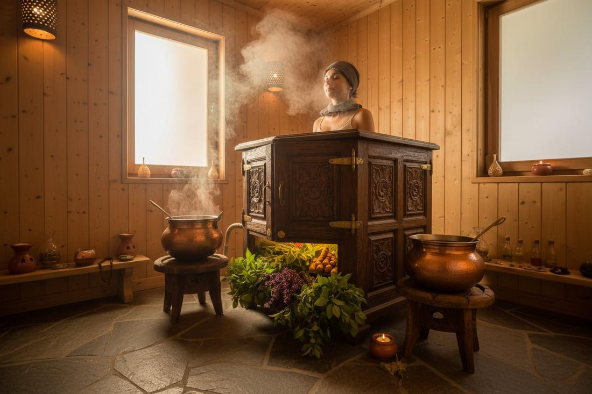
Agni • Fire & SteamHerbalized steam cabinets warming peripheral tissues while keeping the head cool, opening cutaneous pores for natural metabolic cleansing.
 Vayu • Air
Vayu • Air
Conscious diaphragmatic breathing exercises conducted in oxygen-dense forest microclimates to regulate heart rate variability.
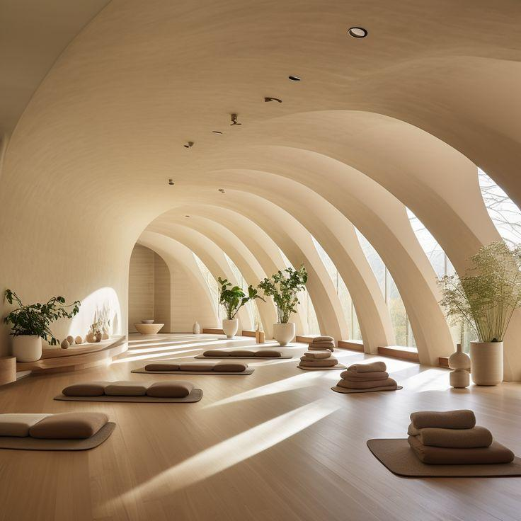
Akasha • SpaceSacred architectural halls with expansive vaulted arches designed for sensory fasting, acoustic calm, and mental stillness.
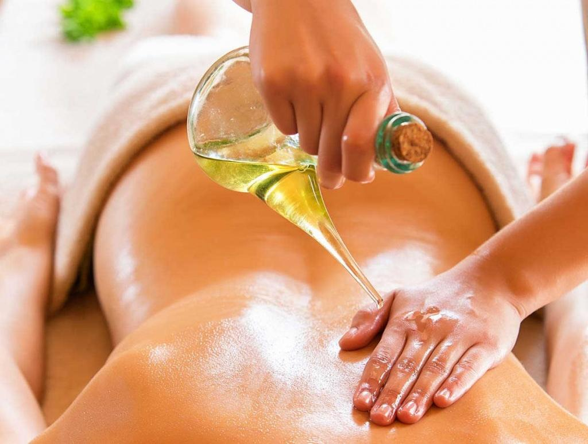
Soma • Botanical TouchRhythmic warm medicated botanical oil applications that nourish cutaneous nerves, improve lymphatic flow, and hydrate dry fascia.
Designed by our multidisciplinary clinical board to address the most prevalent modern lifestyle ailments through holistic intervention.
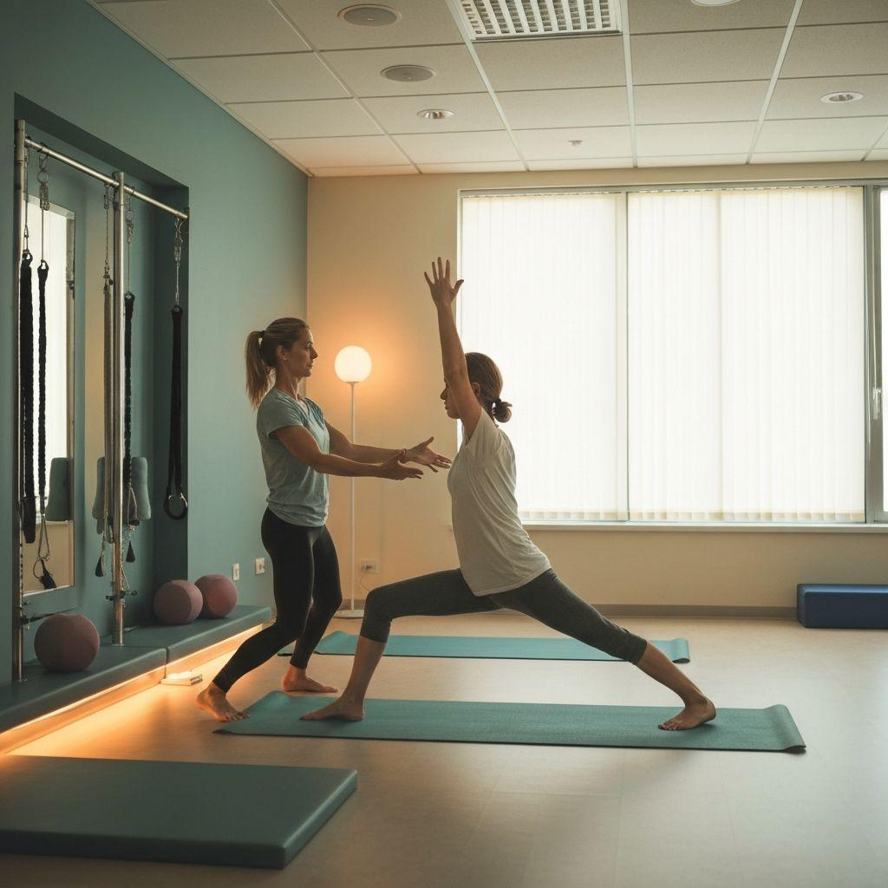
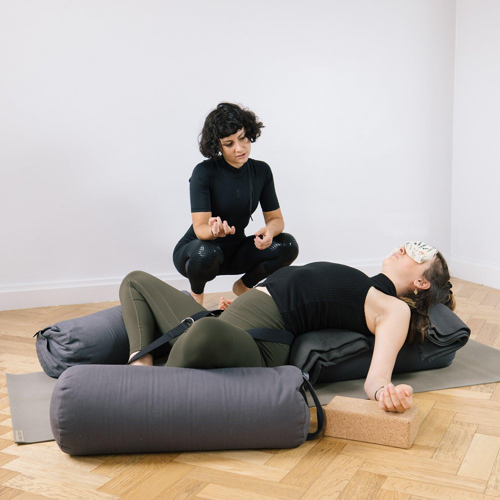
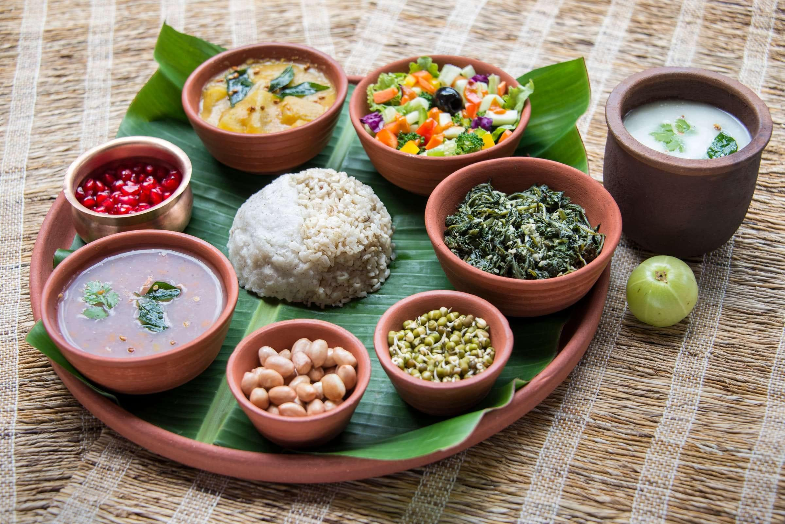
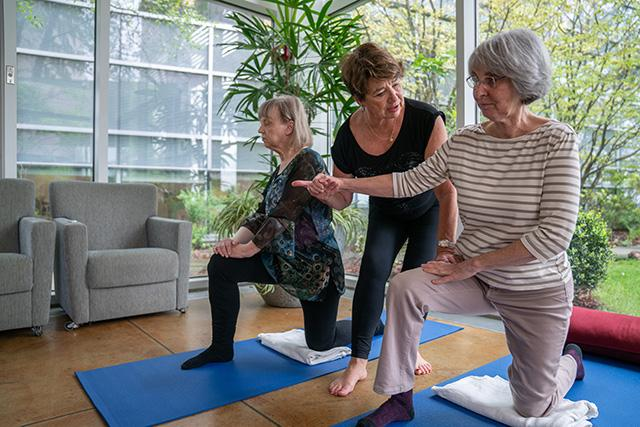
Our sanctuary routine entrains your biological rhythms to the natural cycle of the sun, balancing daytime alertness with deep, restorative nighttime recovery.
 06:30 AM
06:30 AM
Step outdoors to absorb early amber photons that reset your master circadian clock, paired with gentle diaphragmatic pranayama.
Enjoy warm digestive teas, seasonal fruit platters, and sprouted legumes formulated for clean, non-sluggish morning stamina.
 10:00 AM
10:00 AM
Attend your prescribed one-on-one naturopathic treatment: mineral balneology baths, therapeutic mud wraps, or herbal steam.
 01:00 PM
01:00 PM
Savor our chef-crafted seasonal rainbow lunch in an unhurried, silent dining courtyard, followed by an essential 20-minute digestive pause.
 03:30 PM
03:30 PM
Barefoot sensory walking along rounded river stone trails and forest bathing walks amidst medicinal eucalyptus and chamomile beds.
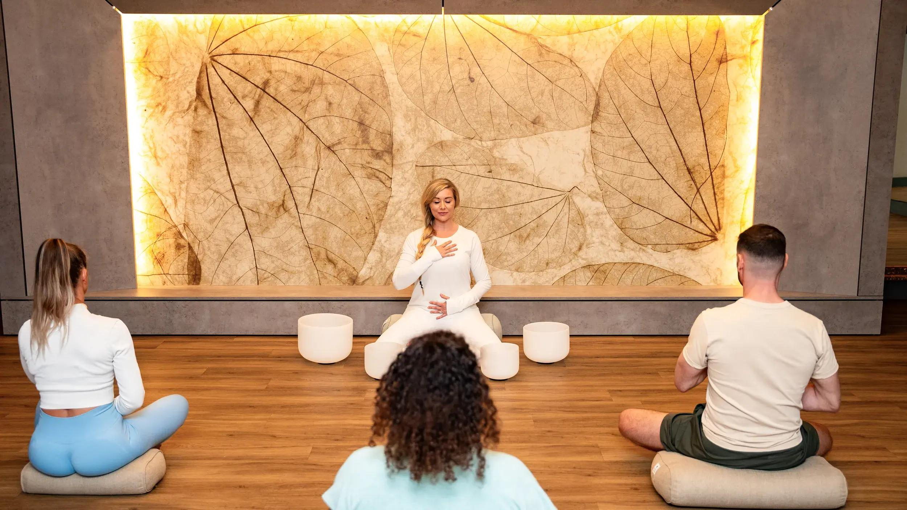
05:30 PMSupported floor postures with organic bolsters and acoustic sound bowl frequencies, preparing your neurobiology for effortless night sleep.
Our intake process goes beyond superficial questionnaires. We evaluate your complete biomechanical posture, autonomic tone, and metabolic cadence.
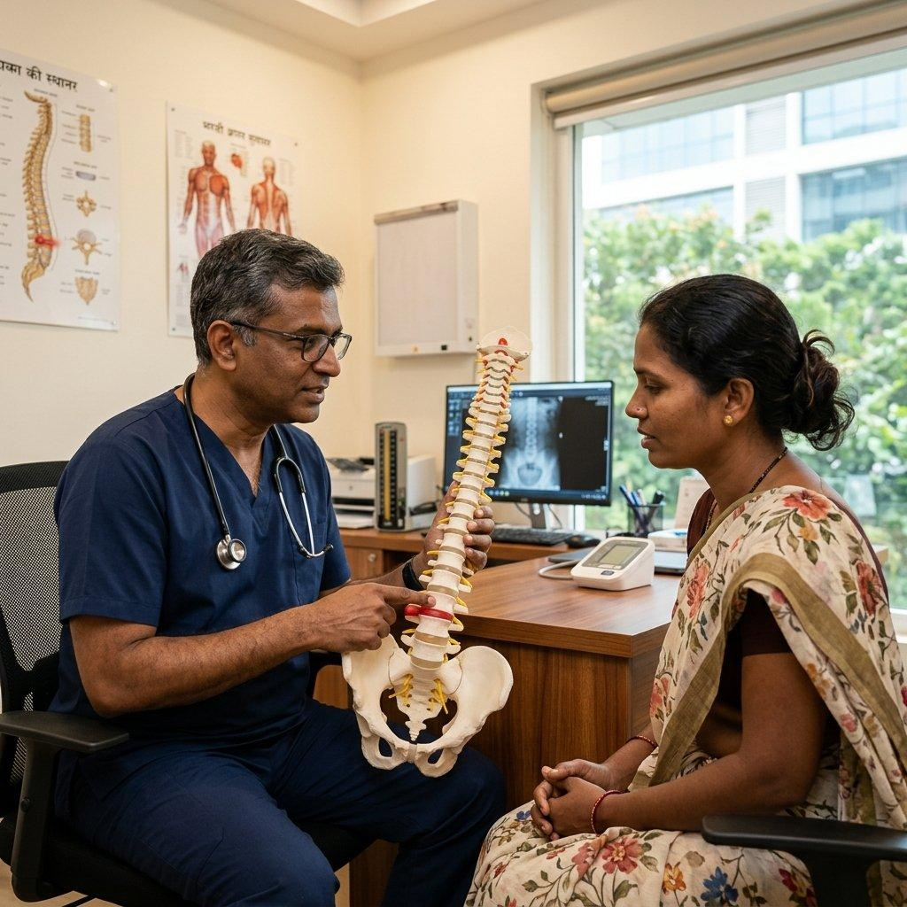


Visual analysis of spinal curvature, shoulder leveling, hamstring tension, and pelvic tilt to identify mechanical compensations.
Human physiology shifts in tandem with external climate. Our therapies adapt throughout the annual cycle to maintain unbroken equilibrium.
Cold-pressed bitter greens, ginger infusions, and dynamic standing yoga postures to shed winter sluggishness and stimulate lymphatic vitality.
 Summer • Grishma
Summer • Grishma
Cooling abdominal pelotherapy packs, hibiscus iced tisanes, shaded forest walks, and gentle Sitali breathing to disperse excess somatic heat.
 Autumn • Sharad
Autumn • Sharad
Warm spiced broths, roasted root vegetables, and gentle lumbar twists to preserve gut integrity as outdoor temperatures drop.
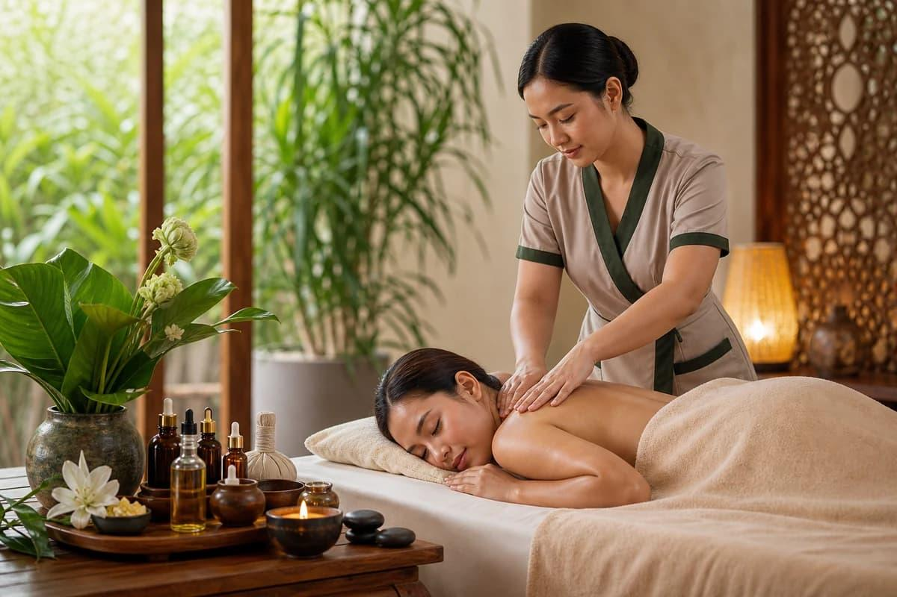
Winter • HemantWarm sesame oil Abhyanga, Swedana herbal steam cabinets, and supported restorative yoga to lubricate cold joints and ground the mind.
Every pavilion is acoustically engineered, daylit, and finished in non-toxic earthen timber to support profound sensory relief.
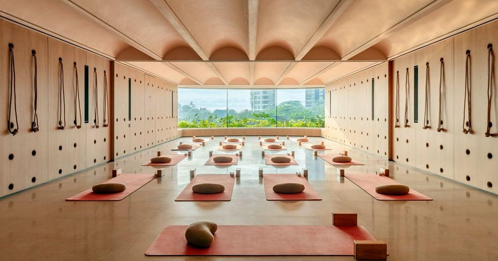
Suite 01 • Spinal BiomechanicsCustom hardwood wall ropes for safe, gravity-assisted spinal traction and supported restorative inversions. Designed with acoustically damped timber floors and soft diffused natural daylight.
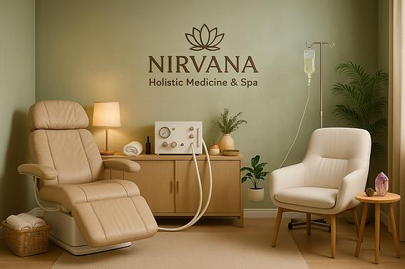
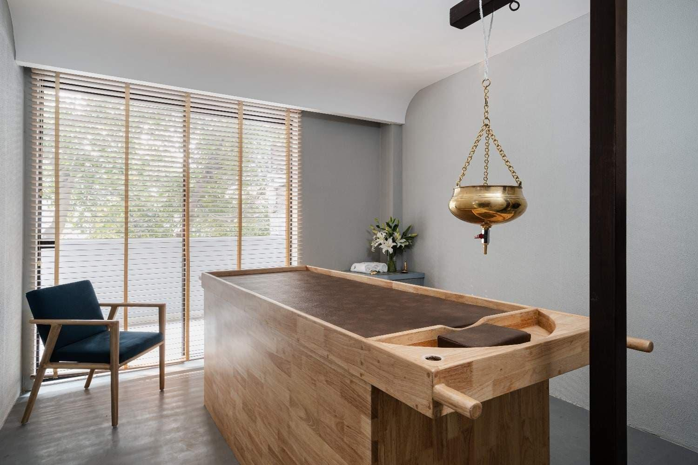

Every journey at Verdant Life begins with an unhurried 60-minute consultation with a certified naturopathic physician. We listen to your story, review your health habits, and design an individualized care schedule combining movement therapy, hydrotherapy, and lifestyle medicine.